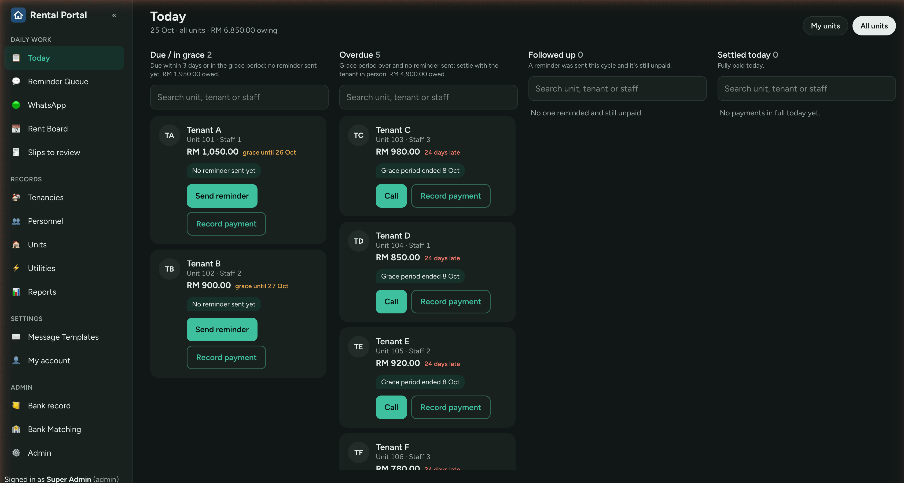
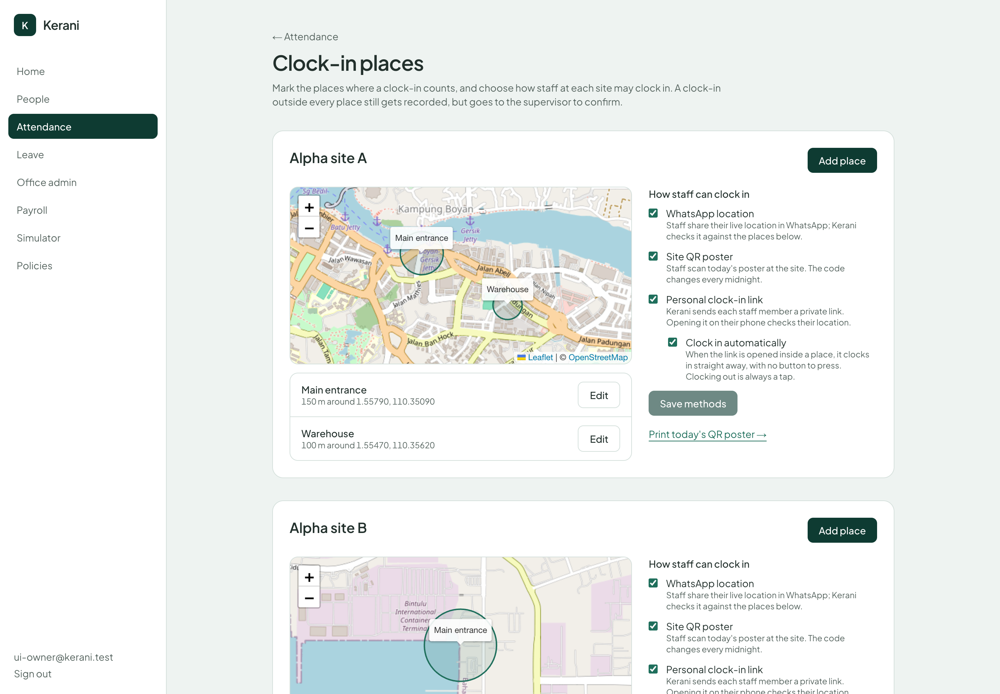
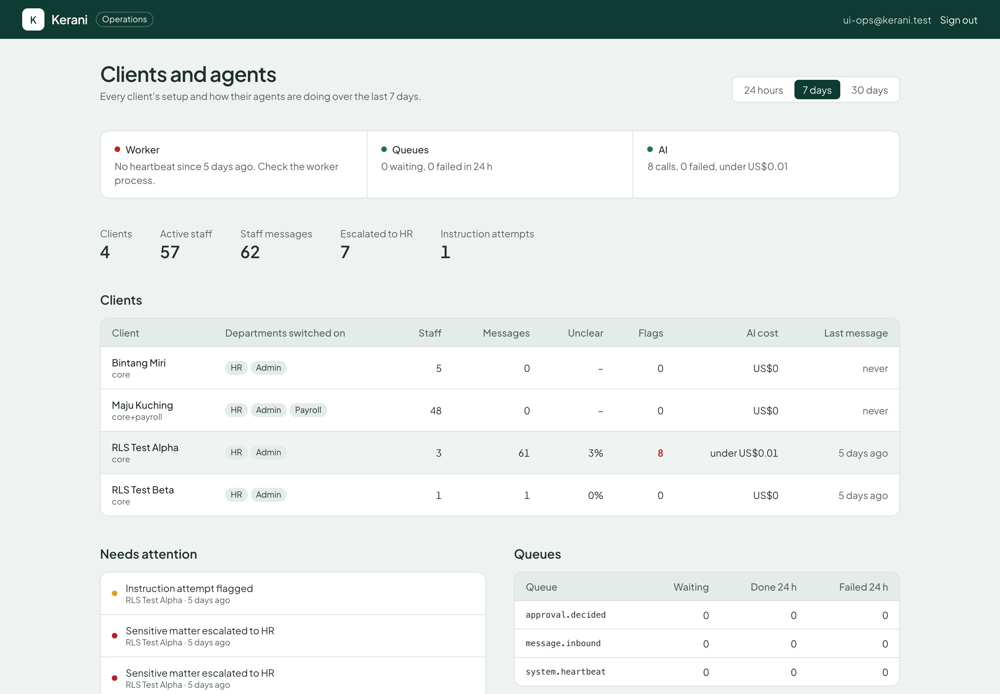

S/01
Excel Automation
Kill repetitive manual work with custom macros, automated workflows and self-building reports — shaped around your real process.
- VBA & Office Scripts
- Auto-reporting
- Data validation
We turn spreadsheets, scattered systems and gut-feel decisions into living dashboards, automation and AI — for businesses across Borneo and beyond.
Drag or scroll →
Kill repetitive manual work with custom macros, automated workflows and self-building reports — shaped around your real process.
Live, interactive dashboards that replace manual status updates — instant visibility into sales, operations and KPIs.
Ready to scale beyond spreadsheets? We design modern data platforms — Databricks lakehouse, governed and analytics-ready.
Put AI on the tedious work — document processing, summaries, extraction — so your team decides instead of data-enters.
Daily sales summaries, inventory alerts and KPI updates delivered straight to your team's WhatsApp or Telegram — no app, no login.
An affordable, cloud-native alternative to Power BI for teams already on Google Workspace — connects straight to Sheets & Drive.
Bridge your existing QNE, SQL Accounting or StoreHub data into meaningful dashboards — connecting local tools to real insight.
Tell us your biggest reporting or data headache. We'll point you to the right starting line — free.
Ask us anythingassets/showreel.mp4 to go live



Sarawak-based, serving all of Borneo and beyond. Fully remote-capable, no travel required.
Get 80% of the value of SAP or Oracle, tailored to your real workflow — not a generic template.
Most projects ship in days to weeks. See real results before your next review cycle.
You work directly with the person who builds your solution — never a helpdesk ticket queue.
One WhatsApp message is all it takes. Tell us your biggest data or operational headache — we'll reply the same day.
Start the conversation